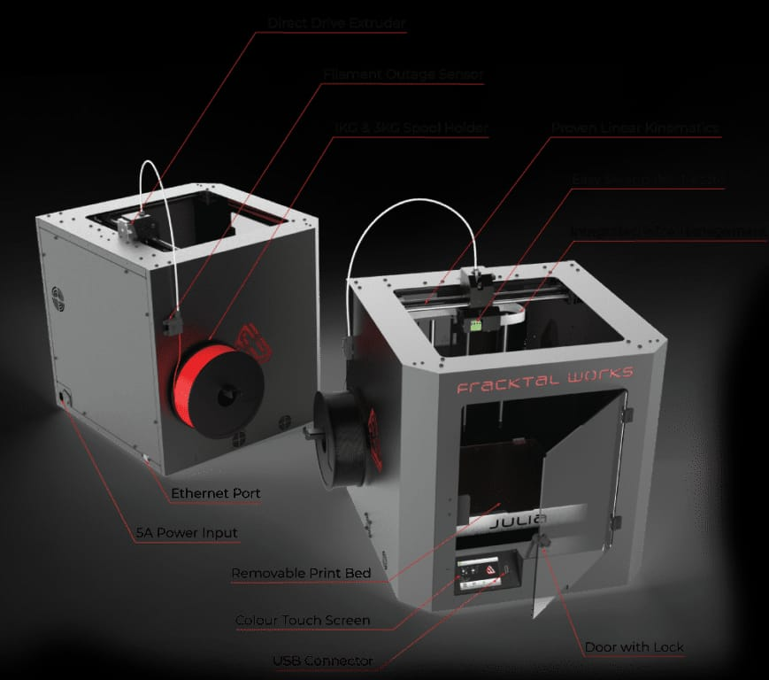
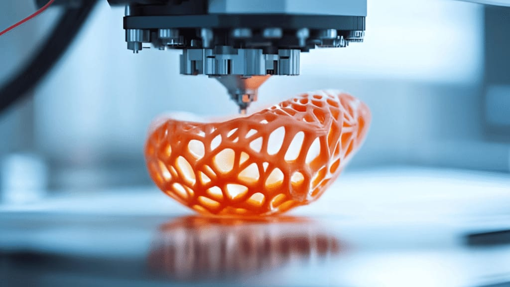
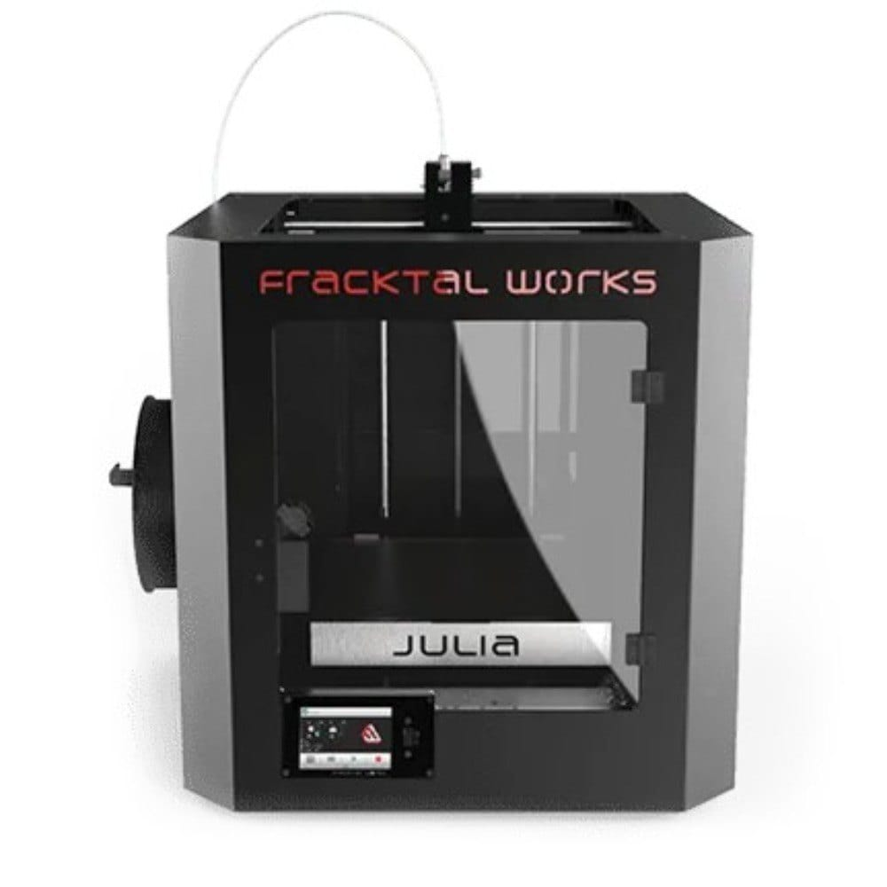
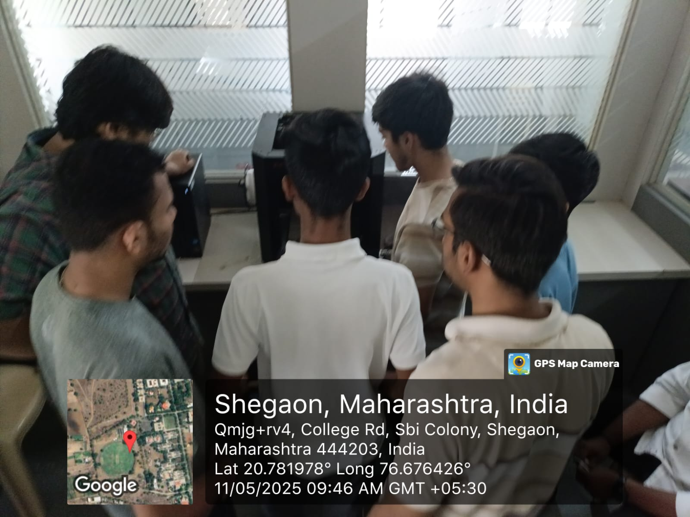
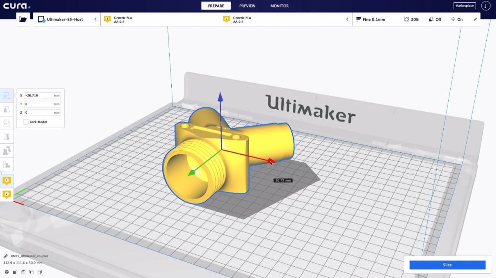
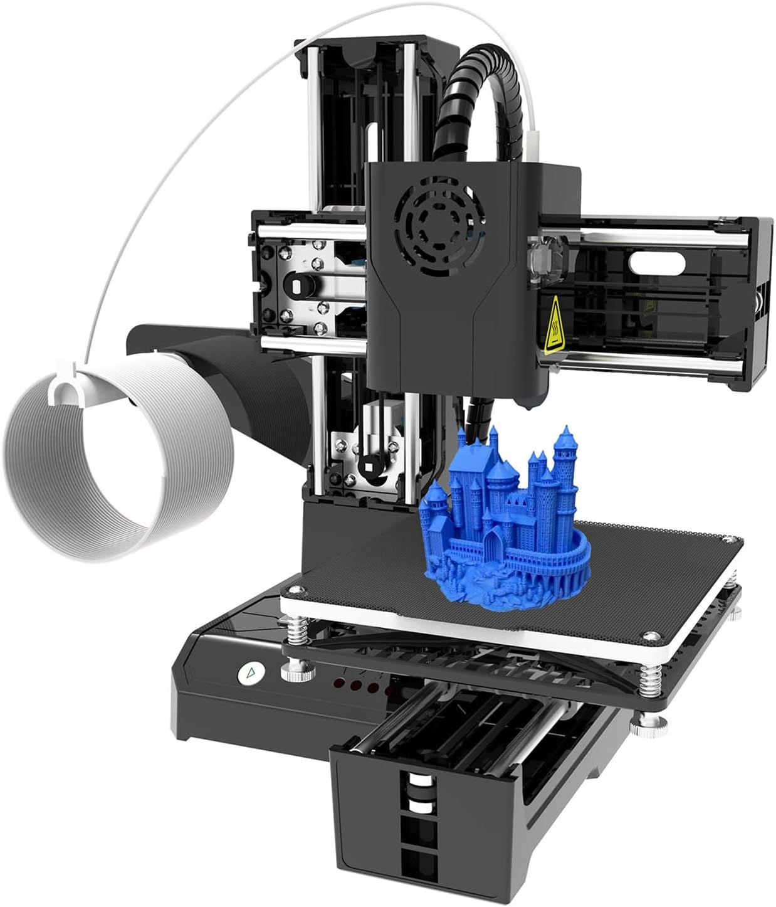
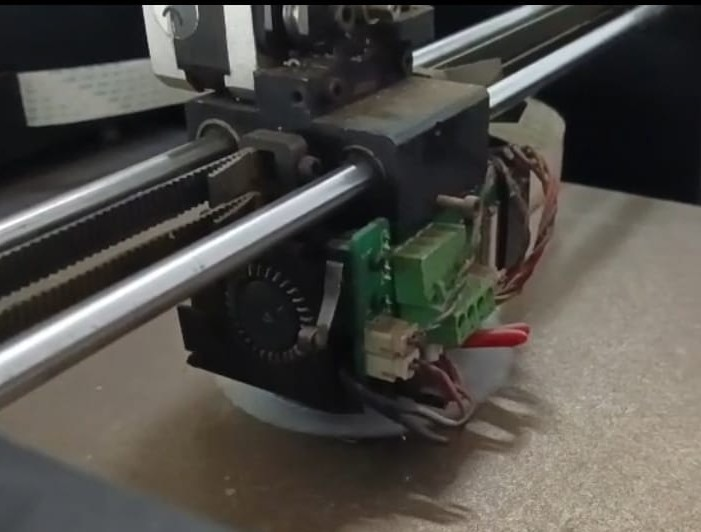
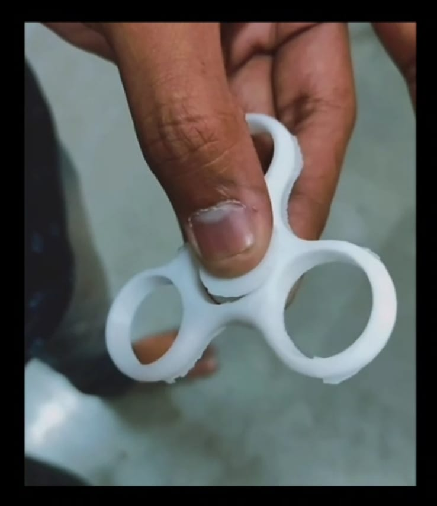

🔬 Lab and Machine
Write about the Digital Fabrication Lab facility, the specific 3D printer models used, technical specifications, software tools, and your first impressions of the equipment. Describe the lab environment and safety protocols.


❓ What is 3D Printing?
Explain the fundamental concepts of 3D printing technology, additive manufacturing processes, layer-by-layer construction, different printing technologies (FDM, SLA, SLS, etc.), and how digital models are transformed into physical objects.
📐 Design Guidelines and Material Notes
Document important design considerations for 3D printing: minimum wall thickness, overhang angles, support requirements, bridging capabilities, layer adhesion, infill patterns, and material-specific guidelines. Include notes on different materials like PLA, ABS, PETG, TPU and their properties, printing temperatures, bed adhesion requirements, and post-processing needs.
🌟 Applications
Discuss various applications of 3D printing across different industries: healthcare (prosthetics, implants), aerospace, automotive, architecture, education, prototyping, jewelry, food industry, and emerging applications in construction and bioprinting.
✅ Advantages
List and explain the key advantages of 3D printing: rapid prototyping, customization, reduced waste, complex geometries, on-demand production, cost-effectiveness for small batches, design freedom, and the ability to create parts that are impossible with traditional manufacturing.
Day 1 – Basics of 3D Printing
Learning Objectives:
• Learn what 3D printing is (additive manufacturing)
• Study types of 3D printing (focus mainly on FDM since it's most common for beginners)
• Understand printer parts: Frame, Bed, Extruder, Nozzle, Filament, Stepper Motors, Control Board
• Watch a video or demo of a 3D printer in action
Today I started my 3D printing journey by learning the fundamental concepts of additive manufacturing technology. I discovered how FDM (Fused Deposition Modeling) works by melting and extruding thermoplastic filament layer by layer to build three-dimensional objects. The key components of the printer became familiar as I studied the mechanical systems that work together to create precise movements and temperature control.
• Learn what 3D printing is (additive manufacturing)
• Study types of 3D printing (focus mainly on FDM since it's most common for beginners)
• Understand printer parts: Frame, Bed, Extruder, Nozzle, Filament, Stepper Motors, Control Board
• Watch a video or demo of a 3D printer in action
Today I started my 3D printing journey by learning the fundamental concepts of additive manufacturing technology. I discovered how FDM (Fused Deposition Modeling) works by melting and extruding thermoplastic filament layer by layer to build three-dimensional objects. The key components of the printer became familiar as I studied the mechanical systems that work together to create precise movements and temperature control.

Day 2 – Materials & Safety
Learning Objectives:
• Learn about filaments: PLA, ABS, PETG, TPU (which to use and when)
• Understand bed adhesion methods (tape, glue stick, build plate, heated bed)
• Study safety precautions: hot nozzle, moving parts, ventilation
On the second day, I explored the various materials available for 3D printing. PLA emerged as the beginner-friendly option due to its low printing temperature and minimal warping, while ABS offers higher strength and heat resistance. PETG provides a balance of both, and TPU opens up flexible printing possibilities. I learned critical safety protocols around hot surfaces, moving mechanical parts, and proper ventilation requirements for different materials.
• Learn about filaments: PLA, ABS, PETG, TPU (which to use and when)
• Understand bed adhesion methods (tape, glue stick, build plate, heated bed)
• Study safety precautions: hot nozzle, moving parts, ventilation
On the second day, I explored the various materials available for 3D printing. PLA emerged as the beginner-friendly option due to its low printing temperature and minimal warping, while ABS offers higher strength and heat resistance. PETG provides a balance of both, and TPU opens up flexible printing possibilities. I learned critical safety protocols around hot surfaces, moving mechanical parts, and proper ventilation requirements for different materials.

Day 3 – Introduction to CAD & STL Files
Learning Objectives:
• Learn basics of 3D design software (TinkerCAD for beginners or Fusion360/Blender if you want advanced)
• Understand STL file format (used for 3D printing)
• Practice downloading free 3D models from Thingiverse / Printables
The third day introduced me to the digital design aspect of 3D printing. I started with TinkerCAD to understand basic 3D modeling concepts and learned how digital models are converted into STL (Stereolithography) files that contain the mesh data needed for printing. Exploring repositories like Thingiverse and Printables opened up a world of ready-to-print designs while teaching me to evaluate model quality and printability.
• Learn basics of 3D design software (TinkerCAD for beginners or Fusion360/Blender if you want advanced)
• Understand STL file format (used for 3D printing)
• Practice downloading free 3D models from Thingiverse / Printables
The third day introduced me to the digital design aspect of 3D printing. I started with TinkerCAD to understand basic 3D modeling concepts and learned how digital models are converted into STL (Stereolithography) files that contain the mesh data needed for printing. Exploring repositories like Thingiverse and Printables opened up a world of ready-to-print designs while teaching me to evaluate model quality and printability.
Day 4 – Slicing Software
Learning Objectives:
• Learn what a slicer is (converts STL → G-code)
• Install Cura (most popular) or PrusaSlicer
• Study key slicing settings: Layer height, Infill %, Supports, Print speed & temperature
• Preview toolpaths in slicer before printing
Day four was dedicated to understanding the crucial bridge between 3D models and actual printing. I learned how slicing software like Cura translates STL files into G-code instructions that the printer can execute. The importance of proper slicing settings became clear as I experimented with layer heights for quality vs. speed trade-offs, infill percentages for strength vs. material usage, and support generation for complex geometries.
• Learn what a slicer is (converts STL → G-code)
• Install Cura (most popular) or PrusaSlicer
• Study key slicing settings: Layer height, Infill %, Supports, Print speed & temperature
• Preview toolpaths in slicer before printing
Day four was dedicated to understanding the crucial bridge between 3D models and actual printing. I learned how slicing software like Cura translates STL files into G-code instructions that the printer can execute. The importance of proper slicing settings became clear as I experimented with layer heights for quality vs. speed trade-offs, infill percentages for strength vs. material usage, and support generation for complex geometries.

Day 5 – First Print & Calibration
Learning Objectives:
• Learn about bed leveling and why it matters
• Calibrate printer: adjust nozzle height and bed surface
• Start your first test print (like a calibration cube or Benchy)
• Observe common issues (warping, stringing, under-extrusion)
The excitement of day five came with executing my first actual print! I learned the critical importance of proper bed leveling – the foundation of successful prints. Through careful calibration of nozzle height and bed surface preparation, I prepared for my first test print. The classic "3DBenchy" boat became my introduction to real-world printing challenges, where I observed issues like warping corners and stringing between parts.
• Learn about bed leveling and why it matters
• Calibrate printer: adjust nozzle height and bed surface
• Start your first test print (like a calibration cube or Benchy)
• Observe common issues (warping, stringing, under-extrusion)
The excitement of day five came with executing my first actual print! I learned the critical importance of proper bed leveling – the foundation of successful prints. Through careful calibration of nozzle height and bed surface preparation, I prepared for my first test print. The classic "3DBenchy" boat became my introduction to real-world printing challenges, where I observed issues like warping corners and stringing between parts.

Day 6 – Troubleshooting & Print Quality
Learning Objectives:
• Learn to identify and fix problems:
- Bed adhesion issues → adjust leveling/bed temp
- Stringing → lower temp, enable retraction
- Layer shifting → tighten belts, check bed stability
• Experiment with changing settings: speed, infill, supports
Day six transformed me into a 3D printing detective! I learned systematic approaches to diagnosing and solving common print failures. Each problem had its solution: poor bed adhesion required temperature and surface adjustments, stringing called for retraction settings and temperature reduction, while layer shifting pointed to mechanical issues with belts and stability. This hands-on troubleshooting experience built confidence in achieving consistent, high-quality prints.
• Learn to identify and fix problems:
- Bed adhesion issues → adjust leveling/bed temp
- Stringing → lower temp, enable retraction
- Layer shifting → tighten belts, check bed stability
• Experiment with changing settings: speed, infill, supports
Day six transformed me into a 3D printing detective! I learned systematic approaches to diagnosing and solving common print failures. Each problem had its solution: poor bed adhesion required temperature and surface adjustments, stringing called for retraction settings and temperature reduction, while layer shifting pointed to mechanical issues with belts and stability. This hands-on troubleshooting experience built confidence in achieving consistent, high-quality prints.

Day 7 – Post-processing & Advanced Learning
Learning Objectives:
• Learn post-processing techniques: sanding, painting, acetone smoothing (for ABS)
• Explore advanced filaments: wood-fill, carbon-fiber, flexible TPU
• Learn about multi-material and resin (SLA/DLP) printing as future steps
• Print a useful object (phone stand, tool holder, custom keychain)
The final day opened up the world of finishing techniques and advanced materials that transform basic prints into professional-quality objects. I discovered how sanding, painting, and chemical smoothing can eliminate layer lines and create smooth surfaces. Exploring specialty filaments like wood-filled PLA that can be stained, carbon-fiber reinforced materials for strength, and flexible TPU for functional parts expanded my understanding of material possibilities. The capstone project of printing a useful everyday object brought together all learned skills into a practical application.
• Learn post-processing techniques: sanding, painting, acetone smoothing (for ABS)
• Explore advanced filaments: wood-fill, carbon-fiber, flexible TPU
• Learn about multi-material and resin (SLA/DLP) printing as future steps
• Print a useful object (phone stand, tool holder, custom keychain)
The final day opened up the world of finishing techniques and advanced materials that transform basic prints into professional-quality objects. I discovered how sanding, painting, and chemical smoothing can eliminate layer lines and create smooth surfaces. Exploring specialty filaments like wood-filled PLA that can be stained, carbon-fiber reinforced materials for strength, and flexible TPU for functional parts expanded my understanding of material possibilities. The capstone project of printing a useful everyday object brought together all learned skills into a practical application.

📋 Learning Outcomes
At the end of the module, students were able to:
• Use slicing software independently for any model
• Operate advanced 3D printers with touch and remote interfaces
• Plan a print from start to finish with minimal supervision
• Understand the connection between digital design and physical prototyping
Mentor: Rahul Sanjay Choudhary
This comprehensive 6-day program transformed theoretical knowledge into practical skills, enabling independent operation of 3D printing workflows from concept to finished product. The hands-on approach built confidence in troubleshooting and quality optimization while establishing a strong foundation for advanced additive manufacturing techniques.
• Use slicing software independently for any model
• Operate advanced 3D printers with touch and remote interfaces
• Plan a print from start to finish with minimal supervision
• Understand the connection between digital design and physical prototyping
Mentor: Rahul Sanjay Choudhary
This comprehensive 6-day program transformed theoretical knowledge into practical skills, enabling independent operation of 3D printing workflows from concept to finished product. The hands-on approach built confidence in troubleshooting and quality optimization while establishing a strong foundation for advanced additive manufacturing techniques.